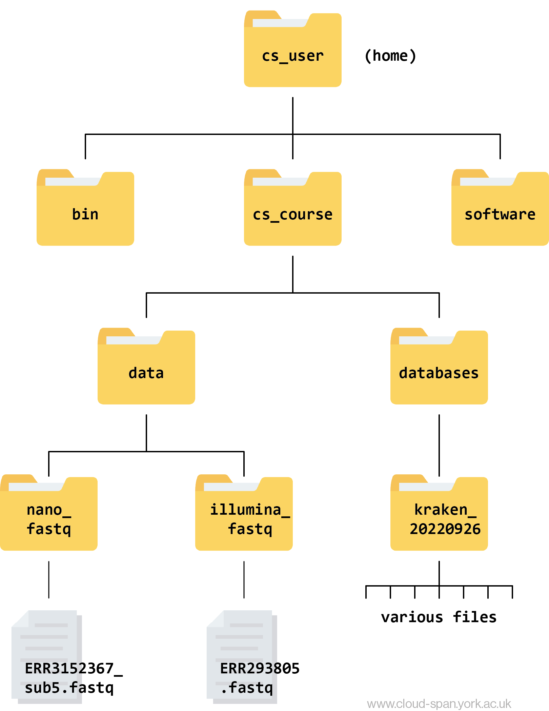

A shell is a computer program that has a command line where you type commands to do things on your computer rather than using menus and buttons on a Graphical User Interface (GUI).
There are many reasons to learn how to use the shell/command line:
Software access - many bioinformatics tools can only be used through a command line interface, or have extra capabilities in the command line version that are not available in the GUI (this is true of most of the software used in this course).
Cloud access - bioinformatics tasks which require large amounts of computing power (like the ones we’ll do later in this course!) are best performed on remote computers or cloud computing platforms, which are accessed via a shell.
Automation - repetitive tasks (e.g. doing the same set of tasks on a large number of files) can be easily automated in the shell, saving you time and preventing human error.
Reproducibility - when using the shell your computer keeps a record of every step that you’ve carried out, which you can use to re-do your work when you need to.
In this lesson you will learn how to use the command line interface to move around in your file system.
How to access the shell
We have already accessed the shell in the previous episode, when we logged onto the Cloud instance.
We will spend most of our time learning about the basics of the shell by manipulating some experimental data. Some of the data we’re going to be working with is quite large, and we’re also going to be using several bioinformatic packages in later lessons to work with this data. To avoid having to spend time downloading the data and downloading and installing all of the software, we’re going to continue using our Cloud instance.
As a reminder, we log in by launching Git Bash or Terminal from the cloudspan folder we made in today’s first episode, and then using the ssh command.
Now we have logged into our Cloud instance, we have access to a new file directory. This instance has been set up with some existing files and directories for you, and we will also be adding some new ones later in the course.
Several commands are frequently used to create, inspect, rename, and delete files and directories.
Let’s find out where we are by running a command called pwd(which stands for “print working directory”). At any moment, our current working directory is our current default directory, i.e., the directory that the computer assumes we want to run commands in,unless we explicitly specify something else. Here, the computer’s response is /home/csuser:
Code
pwd
Output
/home/csuser
This csuser directory is our home directory within our cloud system.
Let’s look at how our file system is organised. We can see what files and subdirectories are in this directory by running ls, which stands for “listing”:
Code
ls
Output
bin cs_course software
ls prints the names of the files and directories in the current directory in alphabetical order, arranged neatly into columns. We’ll be working within the cs_course subdirectory, and creating new subdirectories, throughout this workshop.
The command to change locations in our file system is cd, followed by a directory name to change our working directory. cd stands for “change directory”.
Let’s say we want to navigate to the cs_course directory we saw above. We can use the following command to get there:
Code
cd cs_course
Let’s look at what is in this directory:
Code
ls
Output
data databases
We can make the ls output easier to understand by using the flag-F, which tells ls to add a trailing / to the names of directories:
Code
ls-F
Output
data/ databases/
Anything with a / after it is a directory. Things with a * after them are programs. If there are no decorations, it’s a file.
ls has lots of other options. To find out what they are, we can type:
Code
man ls
man (short for manual) displays detailed documentation (also referred as man page or man file) for bash commands. It is a powerful resource to explore bash commands, understand their usage and flags. Some manual files are very long. You can scroll through the file using your keyboard’s down arrow or use the Space key to go forward one page and the b key to go backwards one page. When you are done reading, hit q to quit.
Challenge
Use the -l option for the ls command to display more information for each item in the directory. What is one piece of additional information this long format gives you that you don’t see with the bare ls command?
Solution
Code
ls-l
Output
total 12drwxrwxr-x 4 csuser csuser 4096 Oct 22 09:04 datadrwxrwxr-x 3 csuser csuser 4096 Oct 6 13:08 databases
The additional information given includes the name of the owner of the file, when the file was last modified, and whether the current user has permission to read and write to the file.
No one can possibly learn all of these arguments - that’s what the manual page is for! It does take practice to get used to using and understanding the information in the manual. Often, you don’t need to understand completely what it is saying to be able to guess what to try.
Let’s go into the data directory and see what is in there using the cd and ls commands.
Code
cd datals-F
Output
illumina_fastq/ nano_fastq/
This directory contains two subdirectories. We can tell they are directories and not files because of the trailing ‘/’. They contain all of the raw data we will need for the rest of the course.
For now, let’s have a look in illumina_fastq. We can do this without changing directories using the ls command followed by the name of the directory.
Code
ls illumina_fastq
Output
ERR4998593_1.fastq ERR4998593_2.fastq
This directory contains two files with .fastq extensions. FASTQ is a format for storing information about sequencing reads and their quality. We will be learning more about FASTQ files in a later lesson.
Let’s also have a look in the nano_fastq directory.
Code
ls nano_fastq
Output
ERR5000342_sub12.fastq
Learning to navigate a new file directory can be confusing at first. To help, here is a tree diagram showing what we have explored so far.

A file hierarchy tree.
First we moved from our home directory at csuser into the cs_course directory, which is one level down. From there we opened up the data directory, which contains subdirectories - illumina_fastq and nano_fastq. We had a peek inside both of these directories and found that illumina_fastq contained two files, while nano_fastq contained one.
Shortcut: Tab Completion
It is very easy to make mistakes typing our filenames and commands. Thankfully, “tab completion” can help us! When you start typing out the name of a directory or file, then hit the tab key, the shell will try to fill in the rest of the directory or file name.
First of all, typing cd after the prompt and pressing enter will always take you back to your home directory. Let’s do this:
Code
cd
then type:
Code
cd cs
and press tab.
The shell will fill in the rest of the directory name for cs_course. Press enter to execute the command and move directories.
Now change directories again to data.
Code
cd data
And again into illumina_fastq.
Code
cd illumina_fastq
Using tab complete can be very helpful. However, it will only autocomplete a file or directory name if you’ve typed enough characters to provide a unique identifier for the file or directory you are trying to access.
For example, if we now try to list the files in illumina_fastq with names starting with ERR by using tab complete:
Code
ls ERR<tab>
The shell auto-completes your command to ERR4998593_, because all file names in the directory begin with this prefix. When you hit tabagain, the shell will list the possible choices.
Output
ERR4998593_1.fastq ERR4998593_2.fastq
Tab completion can also fill in the names of programs, which can be useful if you remember the beginning of a program name.
Code
pw<tab><tab>
Output
pwck pwconv pwd pwdx pwunconv
Displays the name of every program that starts with pw.
Tip
You might find it useful to keep a note of the commands you learn in this course, so you can easily remember them in future. This will be faster than scrolling through the course each time you forget a command. While using your Cloud-SPAN AWS instance you can also type csguide into the command prompt and hit enter for a text-based guide to the command line, including frequently used commands.
Moving around the file system
Now we’re going to learn some additional commands for moving around within our file system.
Use the commands we’ve learned so far to navigate to the illumina_fastq directory from our home:
Code
cdcd cs_coursecd datacd illumina_fastq
What if we want to move back up and out of this directory and to our top level directory? Can we type cd data? Try it and see what happens.
Code
cd data
Output
-bash: cd: shell_data: No such file or directory
Your computer looked for a directory or file called data within the directory you were already in. It didn’t know you wanted to look at a directory level above the one you were located in.
We have a special command to tell the computer to move us back or up one directory level.
Code
cd ..
Now we can use pwd to make sure that we are in the directory we intended to navigate to, and ls to check that the contents of the directory are correct.
Code
pwd
Output
/home/csuser/cs_course/data
Code
ls
Output
illumina_fastq nano_fastq
From this output, we can see that .. did indeed take us back one level in our file system, to data.
You can chain these together like so:
Code
ls ../../
Output
bin cs_course software
This prints the contents of the folder called csuser (our home folder).
Finding hidden directories
There is a hidden directory inside the cs_course directory. Explore the options for ls in the man page to find out how to see hidden directories. List the contents of the directory and identify the name of the text file in the hidden directory.
Hint 1: hidden files and folders in Unix start with ., for example .my_hidden_directory
Hint 2: cs_course is one level above data, our current working directory.
Solution
First use the man command to look at the options for ls.
Code
man ls
The -a option is short for all and says that it causes ls to “not ignore entries starting with .” This is the option we want.
We can use .. to view the contents of the directory above our current working directory.
Code
ls-a ..
Output
. .. data databases .hidden
The name of the hidden directory is .hidden. We can navigate to that directory using cd.
Code
cd ..cd .hidden
And then list the contents of the directory using ls.
Code
ls
Output
youfoundit.txt
The name of the text file is youfoundit.txt.
In most commands the flags can be combined together in no particular order to obtain the desired results/output.
Code
ls-Fals-laF
Summary
We now know how to move around our file system using the command line. This gives us an advantage over interacting with the file system through a GUI as it allows us to work on a remote server, carry out the same set of operations on a large number of files quickly, and opens up many opportunities for using bioinformatic software that is only available in command line versions.
In the next few episodes, we’ll be expanding on these skills and seeing how using the command line shell enables us to make our workflow more efficient and reproducible.
For now, log off using the exit command: This will close the connection, and your terminal will go back to showing your local computer prompt, for example:
Code
exit
This will close the connection, and your terminal will go back to showing your local computer prompt, for example:
Output
logoutConnection to instanceNNN.cloud-span.aws.york.ac.uk closed.username@machineid $